Sentimental Schoolgirl Gallery
同じ子の気配を、季節と感情でほどいていく。
白背景のシンプルイラストを起点に、同じキャラのまま服装、仕草、季節感、感情だけを少しずつ変えたギャラリーです。 入口まではダークでも、このページに入った瞬間だけ、やわらかいライトテーマの余白と空気に切り替えています。
黒髪ポニーテール
架空私立制服
センチメンタル
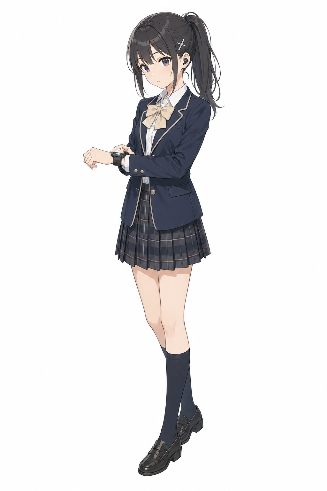
Initial Three
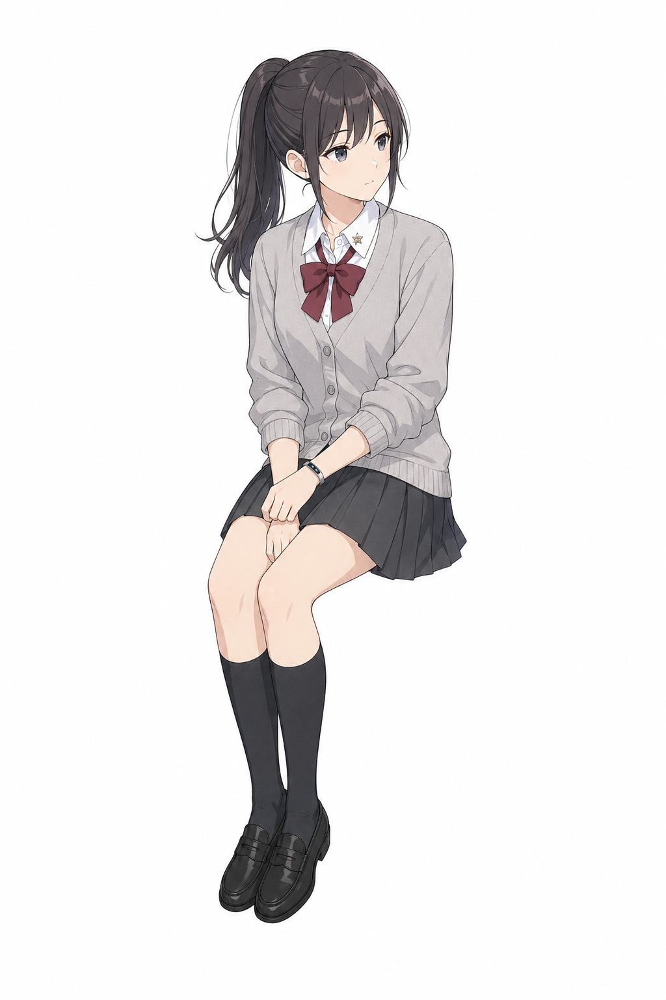
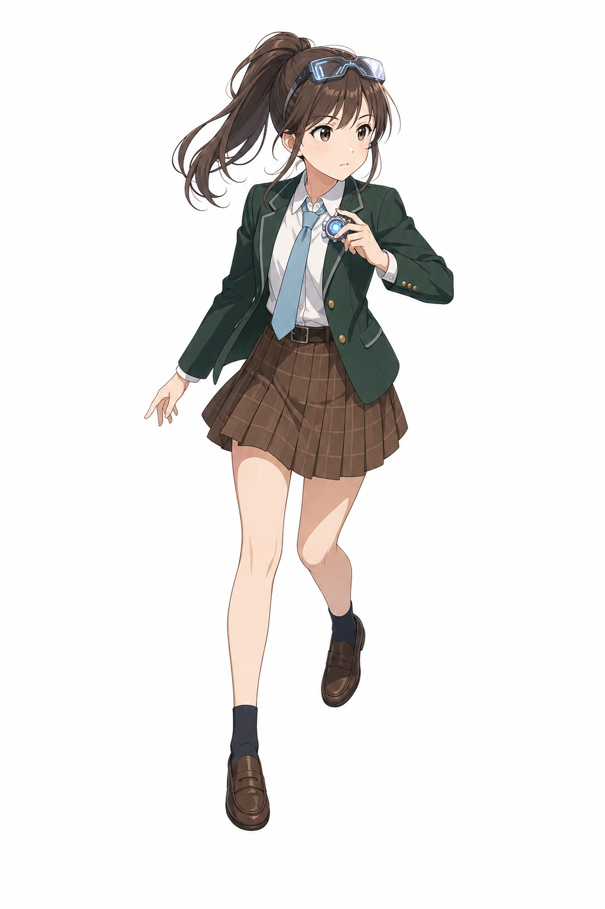
Sentimental Variants
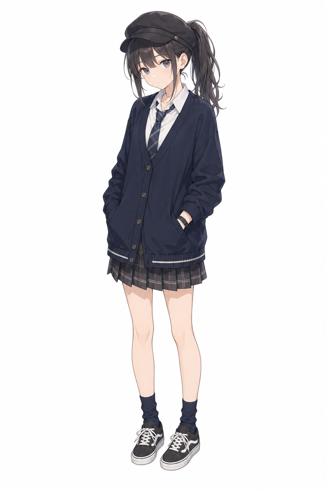
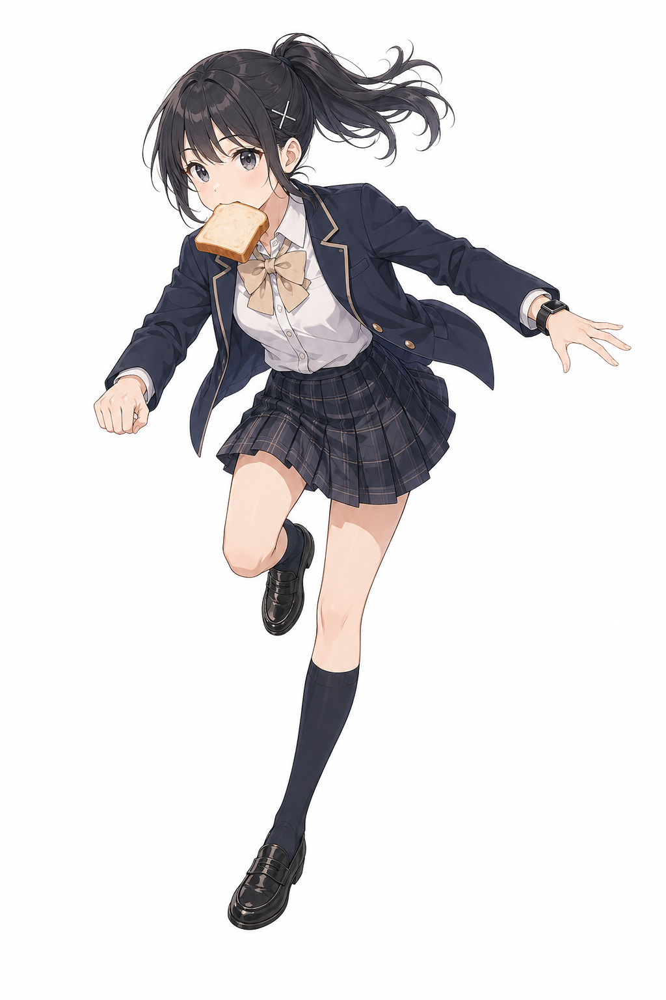
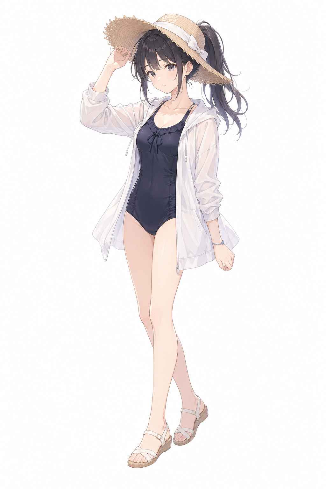
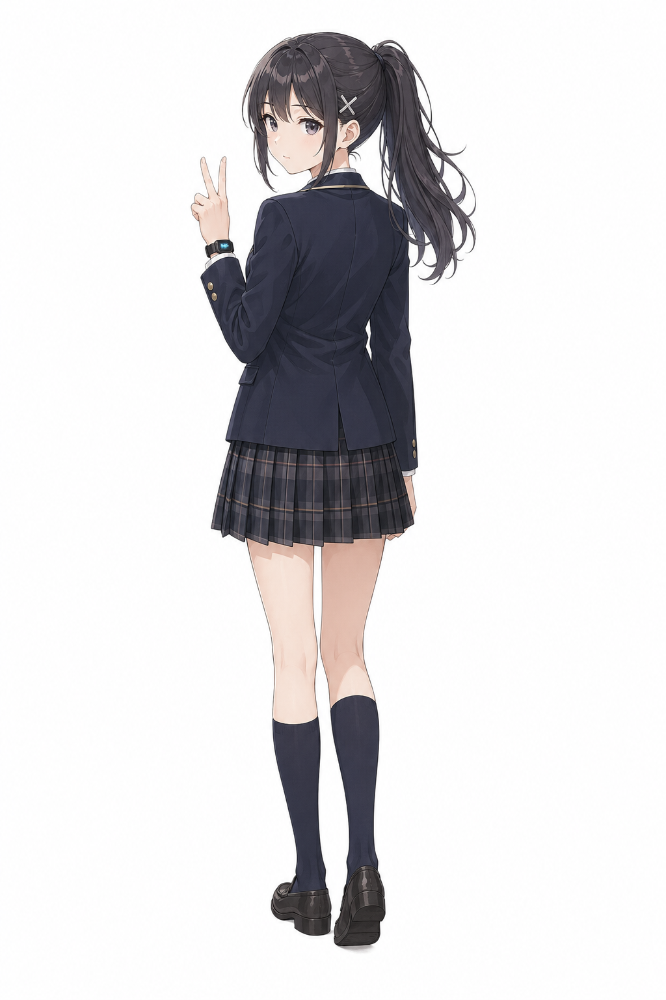
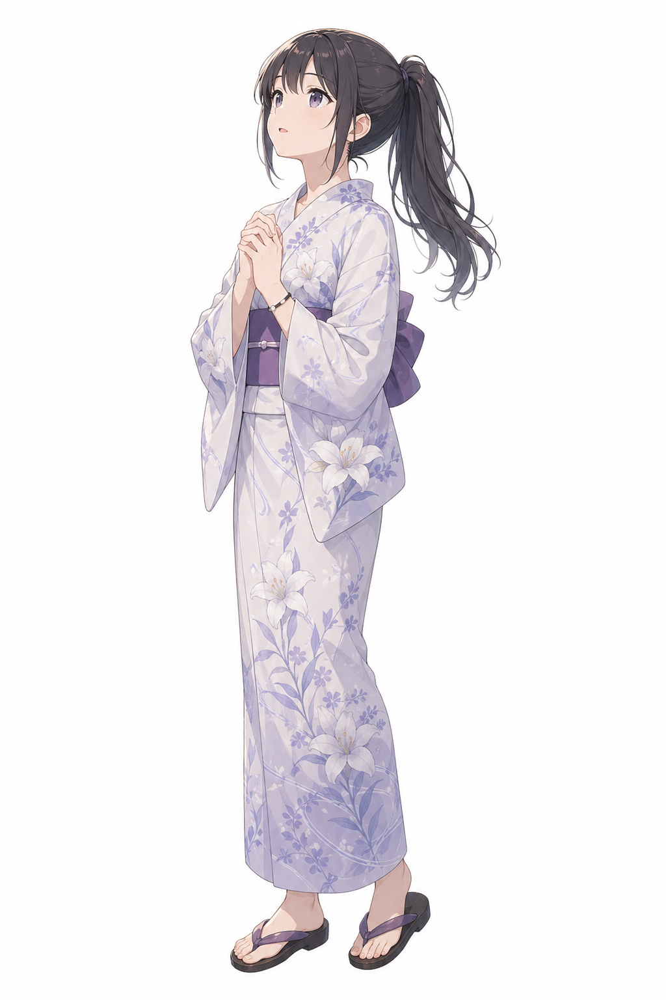
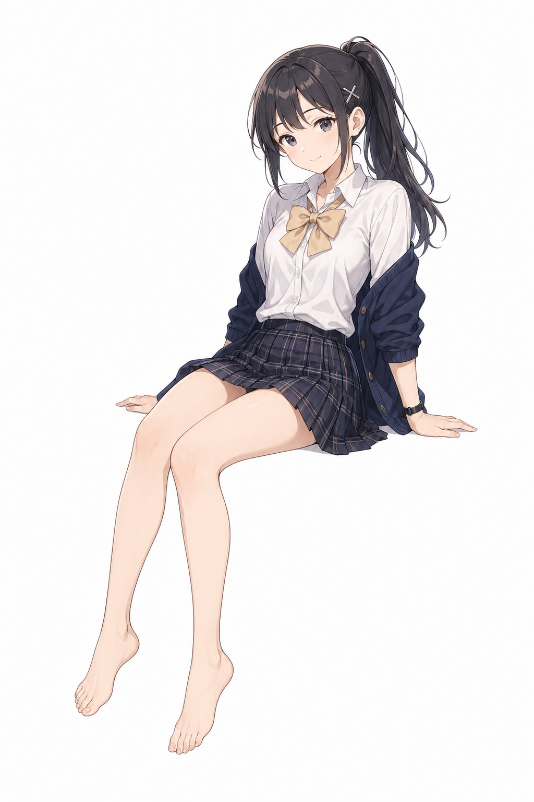
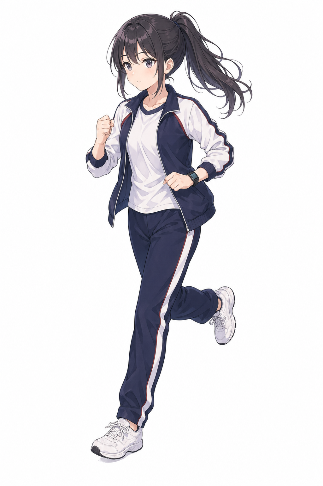
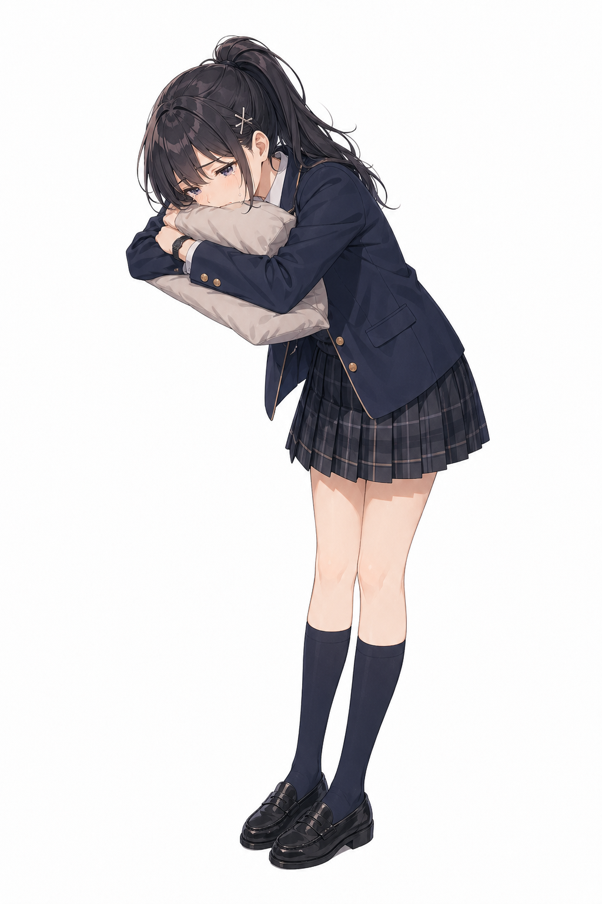
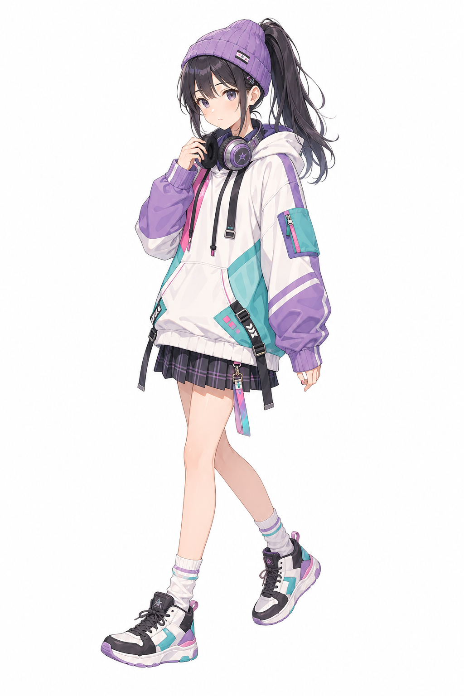
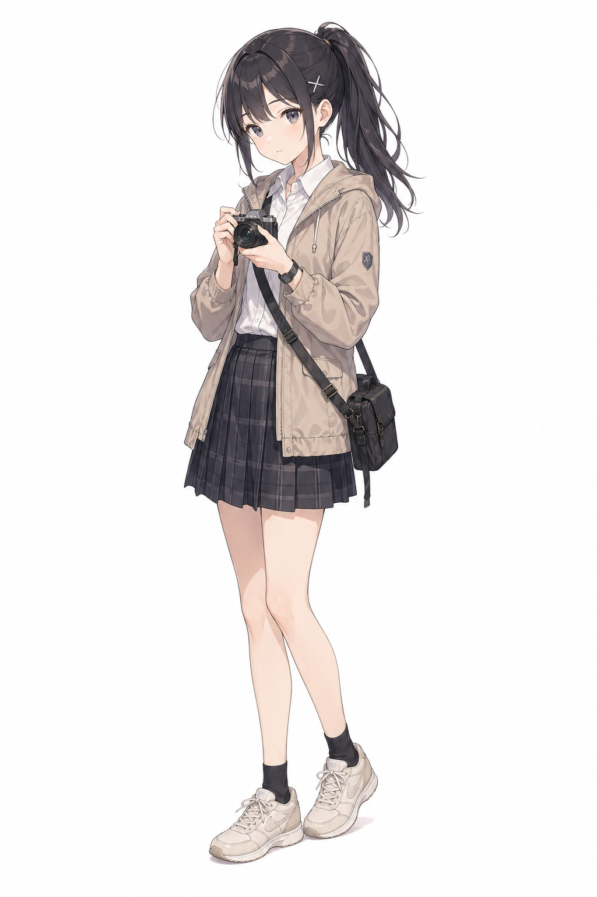
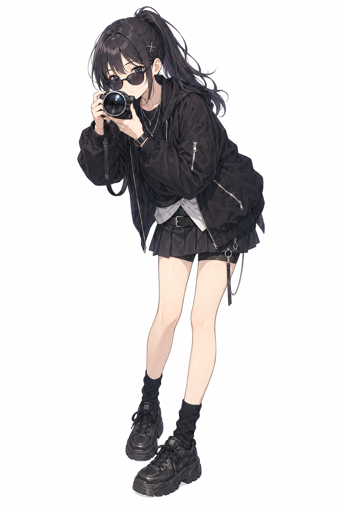
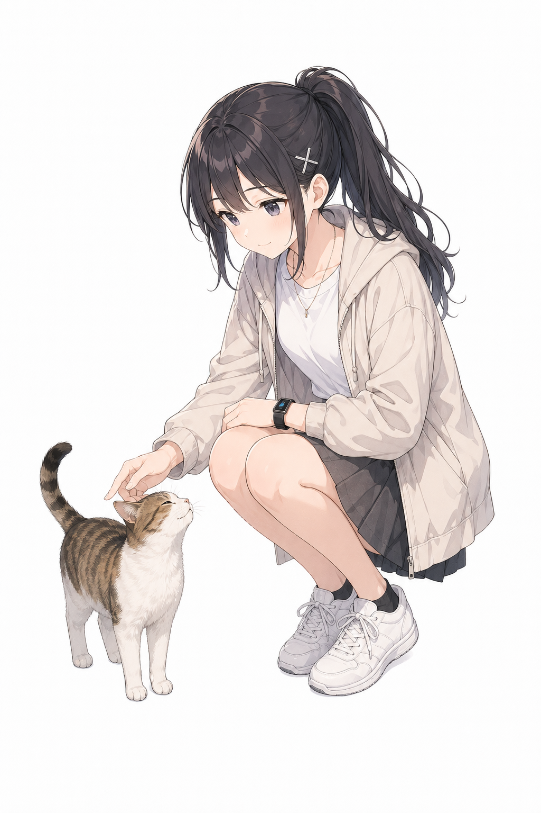